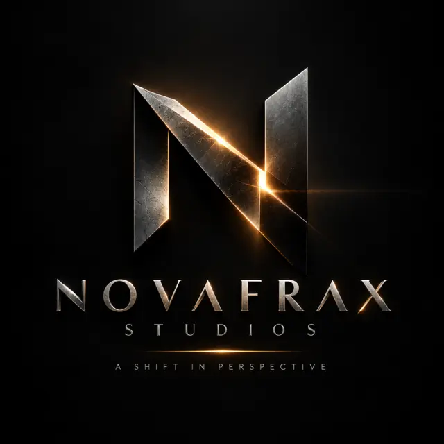

01 — The Archive
History gives us the world.
We create the story. The Archive preserves its shadow.
Not a place. Not a vault. Not a machine. The Archive is the silent layer of reality that preserves the weight of human choices—stories history never recorded, but consequences never forgot.18Unread symbols
7Intersecting lives
∞Ages without borders
02 — Across the Ages
The event is the stage.
The shadow is the story.
No borders of time or place—only borders of causality. Every known event contains an unseen human space.
OriginsBefore the record
AntiquityFoundations
EmpiresRise and fracture
RevolutionsChoice under pressure
ModernityThe remembered world
BeyondShadows still forming
03 — The Eighteen
They were found.
They were not understood.
The symbols do not speak. They do not choose. Their meanings remain beyond the evidence—and beyond the witness.
01UNREAD
02UNREAD
03UNREAD
04UNREAD
05UNREAD
06UNREAD
07UNREAD
08UNREAD
09UNREAD
10UNREAD
11UNREAD
12UNREAD
13UNREAD
14UNREAD
15UNREAD
16UNREAD
17UNREAD
18UNREAD
04 — The Ensemble
Before they met,
their choices had.
Seven lives. Separate paths. A hidden chain of consequences already moving between them.
ELAFJournalist
KARANEngineer
SELINHumanitarian
NIRAVeterinarian
TAYMHistorian
TURANField security
ZAYANProvenance expert
The first fracture is knowledge
Once you have seen the shadow,
you cannot return unchanged.
The past does not change the present directly. It changes the human being—and the human being changes the present.
Return to the threshold ↑
A Novafrax Studios Production© 2026 Novafrax Studios. All rights reserved.